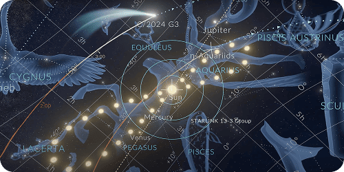
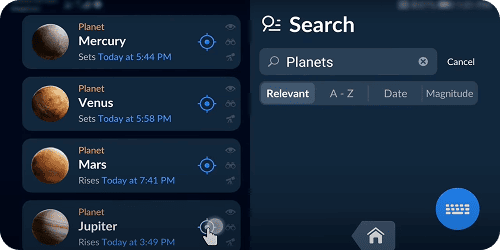
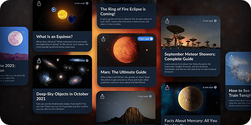
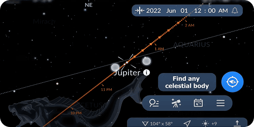

SKY TONIGHT
EXPLORE THE STARS, UNLOCK THE UNIVERSE!
Embark on a cosmic journey with Sky Tonight, the ultimate stargazing
adventure!
This app allows you to explore the night sky in stunning detail.
Whether you're an astronomy enthusiast or a casual stargazer, Sky
Tonight offers a fun and educational experience that lets you
discover stars, planets, constellations, and much more. With
real-time updates, interactive features, and easy navigation, you’ll
unlock the mysteries of the universe right from your device!
 About This App
About This App
Sky Tonight is developed by ProTrail Studios, a team passionate about making astronomy accessible to everyone.
The app stands out for its unique combination of real-time data and an interactive, user-friendly interface. With a sleek, modern design, Sky Tonight gives users the ability to easily navigate the vast expanse of the night sky, whether for educational purposes or casual exploration. Its augmented reality feature lets you hold your device up to the night sky and instantly identify stars and constellations, offering a magical way to experience the universe.
 Unique Features
Unique Features
-
Augmented Reality Mode
Point your device at the night sky, and watch as stars and constellations appear on screen, making stargazing an immersive experience.
-
Customizable Alerts
Set notifications for upcoming celestial events like meteor showers, eclipses, and planetary alignments.
-
Interactive Sky Map
Zoom, pan, and explore the night sky with ease to discover celestial objects in your area.
-
Global Coverage
Enjoy accurate sky views from anywhere in the world, tailored to your location and time zone.
 Gallery
Gallery
-
Explore the Sky
Show interactive maps of the night sky, highlighting stars and planets.
-
Augmented Reality Mode
Showcase the AR feature in action, with the app identifying constellations when held up to the sky.
-
Upcoming Celestial
Events
Highlight upcoming events, such as meteor showers or eclipses, with vibrant visuals.
-
Night Mode
Demonstrate the night mode feature in low-light environments, enhancing the stargazing experience.
How to Use
-
Explore the Sky

Open the app and start exploring the night sky in your current location. Pinch to zoom and scroll to find stars, planets, and constellations.
-
Activate AR Mode
.png)
Hold your device up to the night sky and use the app’s augmented reality mode to see celestial objects in real time.
-
Set Alerts

Set up notifications to remind you of upcoming celestial events such as meteor showers and eclipses.
-
Learn About Celestial Objects

Tap on any star or planet to get detailed information, including its name, type, and distance from Earth.
-
Track the Planets

Watch the movements of planets and track their positions relative to your location.
Reviews
-

John Martin
"A game-changer for stargazing! I love the augmented reality feature—it's like holding the night sky in your hands. So many interesting facts about stars and planets. It’s like having a mini planetarium in my pocket!"
-
.png)
Chris Johnson
"As someone who’s always wanted to get into astronomy, this app has been a great introduction. The interface is clean, and I love the educational details. The app also has a night mode that’s super helpful when you’re outside stargazing."
-
.png)
Mark Thompson
"Sky Tonight makes stargazing so much more interactive. The AR mode is amazing, and I love how it’s tailored to my location. Perfect for anyone interested in astronomy!"
-
.png)
Rachel Greene
"This app is beautiful and easy to use. It’s perfect for anyone who wants to learn about the night sky. The alerts for celestial events are a great feature—I never miss a meteor shower now!"
-
.png)
Sarah Wilson
"I’ve always loved looking at the stars, but now I can easily find out what I’m looking at. The real-time tracking is fantastic, and the educational content makes it so much more enjoyable."
-
John Martin
"A game-changer for stargazing! I love the augmented reality feature—it's like holding the night sky in your hands. So many interesting facts about stars and planets. It’s like having a mini planetarium in my pocket!"
-
Chris Johnson
"As someone who’s always wanted to get into astronomy, this app has been a great introduction. The interface is clean, and I love the educational details. The app also has a night mode that’s super helpful when you’re outside stargazing."
-
Mark Thompson
"Sky Tonight makes stargazing so much more interactive. The AR mode is amazing, and I love how it’s tailored to my location. Perfect for anyone interested in astronomy!"
-
Rachel Greene
"This app is beautiful and easy to use. It’s perfect for anyone who wants to learn about the night sky. The alerts for celestial events are a great feature—I never miss a meteor shower now!"
-
Sarah Wilson
"I’ve always loved looking at the stars, but now I can easily find out what I’m looking at. The real-time tracking is fantastic, and the educational content makes it so much more enjoyable."
Benefits
-
Explore the Cosmos
Discover stars, planets, and constellations in real-time with an interactive map of the night sky.
-
Real-Time Tracking
Track celestial bodies' movements and alignments as they happen in your location.
-
Personalized Stargazing
Customize your view to match your location and time to get the most accurate and engaging experience.
-
Educational & Fun
Learn about celestial events, famous constellations, and deep-space objects with fun facts and details.
-
Night Mode
Protect your eyes while stargazing with a special night mode that enhances visibility in low-light conditions.